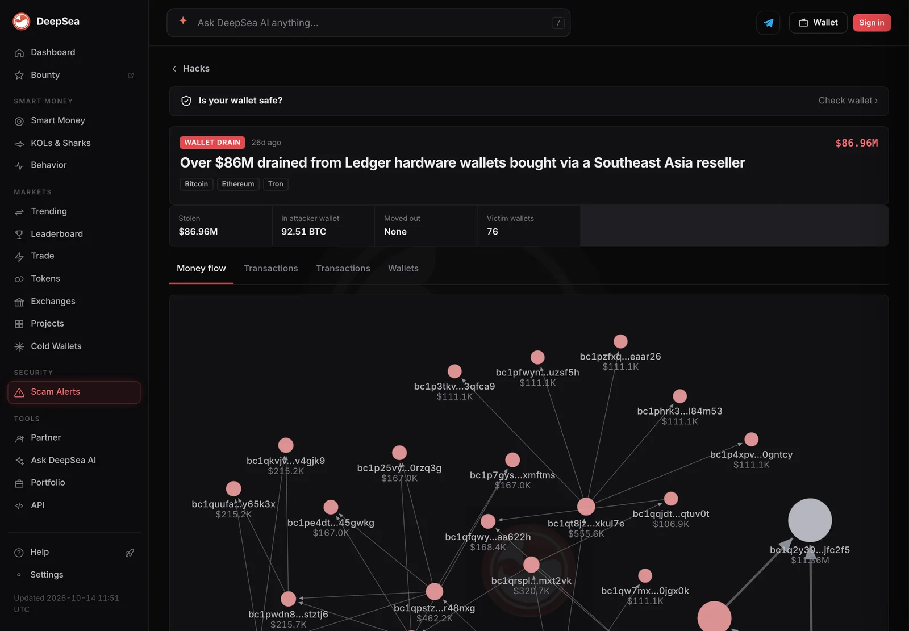
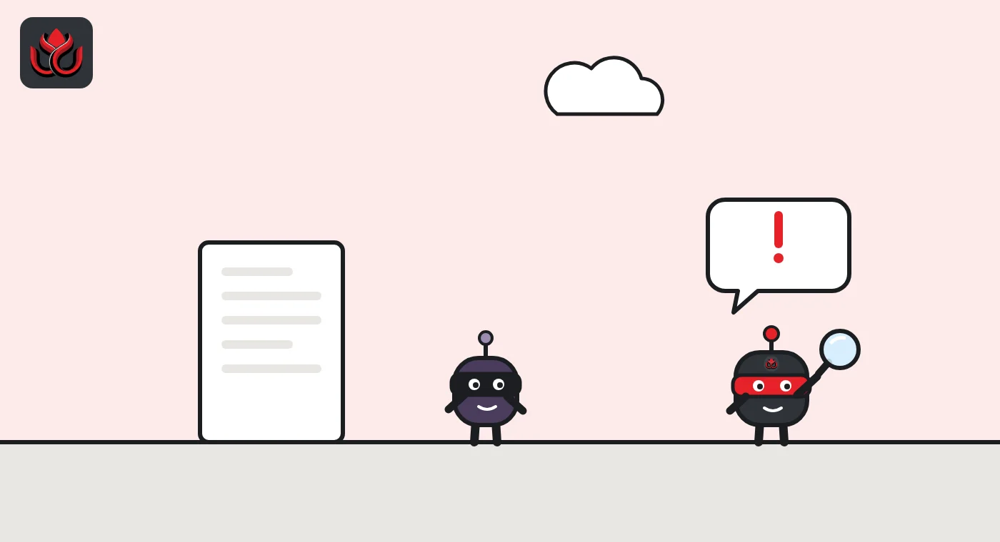
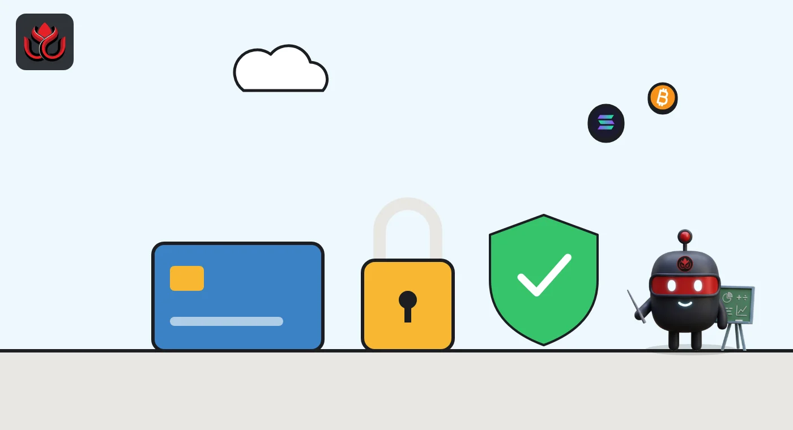

Seed phrase and hardware wallet safety: the words that guard your crypto
Your seed phrase is the master key to your wallet: anyone who sees it can take everything, and if you lose it, nobody can restore it. A hardware wallet keeps keys offline, but only if the phrase stays offline too and the device is genuine.
Key points
- A seed phrase (also called a recovery phrase) is 12 to 24 words that can rebuild every key in a wallet. Whoever has it controls the funds.
- Wallet makers agree on the basics: write it down offline, never type it into a phone or computer, never photograph it or store it in the cloud, and never share it.
- A hardware wallet signs transactions inside the device, so keys never touch your computer. Its screen is the one place you can trust to show what you are signing.
- Never use a device that arrives with a phrase or PIN already set. The 2026 implant case shows why where you buy a device matters.
 What DeepSea's data shows
What DeepSea's data shows
DeepSea tracks both of the cases above. Its CryptoBilis page lists $86.96 million drained from Ledger devices bought through the Southeast Asia reseller, across Bitcoin, Ethereum and Tron, with 92.51 BTC still sitting in the attacker wallet. DeepSea's advice: if you bought from that channel in the last 90 days and never set the device up, do not initialize it.
For the D'CENT app drain, DeepSea counts about 11.7 million XRP, around $20 million, taken from about 6,700 app wallets in September. It says the transfers were signed with the victims' own keys, and that D'CENT hardware wallets were not affected unless their recovery phrase had been typed into the app.

Data: DeepSea (desea.io), checked November 2, 2026, 7:59 a.m. ET.
What is a seed phrase?
A seed phrase, also called a recovery phrase or Secret Recovery Phrase, is a list of words that can restore an entire crypto wallet. Ledger's explainer describes it as the 12 to 24 English words your wallet showed you during setup.
The words come from BIP-39, a standard list of 2,048 English words. They encode a long random number in a form people can write down. Ledger says that number must be random and longer than 128 bits; its own devices use 24 words, which encode 256 bits.
The phrase works like a master key. The wallet derives the private keys for all your accounts, on many networks, from it. The same phrase always produces the same keys, which is why it can restore your wallet on a new device.
Why is the seed phrase so important?
Your coins live on the blockchain, not inside the wallet app or device. The wallet only protects the keys that control them. So anyone with your phrase can rebuild those keys and move your funds from anywhere in the world.
The reverse is also true. MetaMask's support guide says plainly: "MetaMask cannot recover your wallet for you." If you lose the phrase and your device, your funds cannot be recovered. A wallet password is different: it only unlocks the app on one device, while the phrase restores ownership anywhere.
Both sides of that risk show up in real cases. In the D'CENT app wallet drain covered by LC Insight, the users most at risk were those whose recovery phrase had been entered into a phone app.

How should you store a seed phrase?
Wallet makers give the same core advice. Ledger's storage guide and MetaMask's guide recommend:
- Offline only. Ledger says the phrase must never be entered into any phone, computer or other device that can connect to the internet.
- No photos, no cloud. Do not photograph it or upload it. MetaMask also rules out password managers and emailed copies.
- Exact copy. Ledger's security tips say to check that your written phrase is accurate and readable. One wrong word restores a different wallet.
- Durable material. Paper can fade, burn or get wet. Ledger suggests steel backups, which resist fire and water.
- Private location. Keep it where only you can reach it. Ledger also describes splitting it into parts stored in different places, so no single part can rebuild it.
And never share it. MetaMask says its staff will never ask for it, and any request is a scam.
What does a hardware wallet actually protect?
A hardware wallet is a small device that stores your keys and signs transactions inside itself. Your computer or phone only prepares the transaction and passes it along. Ledger explains that software wallets keep keys on internet-connected devices, which makes them more exposed to malware.
The device's own screen matters most. Ledger's security tips say to check receiving addresses and transaction details on the device display, because a connected computer can show tampered details. Approving something you cannot read on the device is called blind signing.
A device also adds physical protection: it is locked with a PIN, and Ledger describes an optional passphrase, covered in the next section.
But a hardware wallet has limits. Ledger itself notes a device cannot stop you from approving something you were tricked into signing. And storing the phrase on a connected device, Ledger warns, defeats the purpose of using a hardware wallet.

What is a passphrase, and do you need one?
Some wallets let you add an optional passphrase on top of the seed phrase. Ledger describes it as a 25th word that opens a separate, hidden wallet. Someone who finds your 24 words but not the passphrase sees only the ordinary wallet, not the hidden one.
The trade-off is simple. A passphrase adds protection against someone who finds your written phrase, but it is one more thing you must never lose. If you forget it, the hidden wallet cannot be opened, even with the correct 24 words. Anyone using one should store it separately from the seed phrase and just as carefully.
Ledger also mentions a Recovery Check app that lets owners confirm their written phrase matches the device without exposing it to a computer. Checks like this matter because a phrase with one wrong word restores a different, empty wallet.
How do you know your hardware wallet is safe to use?
Start with how the device reaches you. Ledger's explainer says not to use a device that arrives with a pre-set phrase or PIN, and to contact support instead. Its security tips say to always generate your own 24-word phrase.
The 2026 CryptoBilis case shows why the supply chain matters. In an October 13 update, Ledger said it had confirmed an unauthorized hardware implant in one affected user's device on October 10, and that every confirmed loss so far involved devices sold through CryptoBilis, a reseller in Southeast Asia. Ledger's security lab says the implant sits inside the case, reads the 24-word phrase off the screen during setup and sends it out over a mobile network using an eSIM. It does not touch the secure chip or the wallet's software. Ledger says it has not confirmed how many users were hit or how much was lost, and LC Insight covered the case here. The attacker did not break the wallet. It copied the backup words the moment the owner first saw them on screen.
Practical steps follow from that. Buy from the manufacturer or a reseller it lists, set the device up yourself, keep the phrase off every connected device and, for software wallets, Ledger suggests sending a small test amount first.
What are the most common mistakes?
- Typing the phrase into a website, app or form that claims to "verify" or "sync" your wallet.
- Keeping a photo of the phrase on a phone that backs up to the cloud.
- Using the same phrase in a hardware wallet and a phone app.
- Buying a discounted device from an unknown seller.
- Approving transactions on the device without reading what the screen shows.
- Trusting someone who contacts you offering to help recover a wallet.
Each of these puts the phrase, or your signature, in someone else's hands. None of them requires breaking any cryptography.
LC Insight analysis
This section is our reading of the facts above, not a statement of fact.
- We think most losses in self-custody are about the phrase, not the device. The hardware does its job; the risk is where the 24 words end up.
- The real blind spot is the supply chain. Users check their phrase storage but rarely question where their device came from, and 2026 showed that this can be the weakest link.
What's next
- Stronger tamper checks from hardware wallet makers after the CryptoBilis implant case
- Wallets showing clearer transaction details on device screens
- Phishing that impersonates wallet support to collect recovery phrases
Frequently asked questions
Is a 24-word phrase safer than a 12-word phrase?
Both are very hard to guess when generated randomly by the wallet. Ledger says the randomness must exceed 128 bits; 24 words encode 256 bits. The bigger risk is theft or loss, not guessing.
Can a wallet company recover my seed phrase?
Normally no. MetaMask says it cannot recover your wallet, and Ledger tells users never to share the phrase, even with Ledger. Some vendors sell optional paid backup services, which are a separate choice with their own trade-offs.
Should I store my seed phrase in a password manager?
MetaMask advises against online storage, including password managers, cloud folders and email. Ledger says the phrase should never be entered into an internet-connected device.
What should I do if someone may have seen my phrase?
Treat it as compromised. Set up a new wallet with a new phrase on a trusted device and move your funds there. Restoring the old phrase on a new device does not help.
Disclaimer. This article is based on public information and the sources listed below as of the update time shown. It is for information only and is not investment, legal or tax advice. Figures may change as companies and authorities publish new data.
Sources
- Ledger Academy, What is a seed phrase?
- Ledger Academy, How to keep your seed phrase secure
- Ledger Academy, Security tips for hardware wallets
- Ledger Academy, How crypto gets stolen and how to avoid it
- MetaMask Support, How to secure your Secret Recovery Phrase and password
- Ledger on X, Donjon update on the CryptoBilis investigation (October 13, 2026)